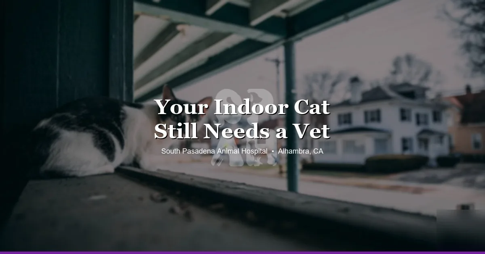

April 14, 2026 · 8 min read
Your Kitten’s First Vet Visit in Alhambra: What to Expect & What to Bring

You just got a kitten. Maybe you picked them up from a shelter, a rescue, a breeder, or a neighbor's surprise litter. Now you're wondering: when should I take them to the vet, and what happens when I do?
At our Alhambra kitten vet clinic, we see new kitten owners every week — some of whom have had cats for years and some for whom this is completely new. This guide covers everything you need to know before, during, and after that first visit so you can walk in feeling prepared instead of anxious.
When to Schedule the First Visit
Ideally, your kitten's first vet visit should happen within the first week of bringing them home — and no later than 8 weeks of age. Here's why timing matters:
- Maternal antibody window: Kittens are born with some passive immunity from their mother, but it fades. Vaccines need to be started before that window closes — usually around 6–8 weeks — to ensure there's no gap in protection.
- Early parasite treatment: Most kittens from any source arrive with roundworms, and many have fleas or ear mites. The sooner these are caught and treated, the better for your kitten and for everyone in the household.
- Congenital problem detection: Heart murmurs, hernias, cleft palates, and other congenital issues are much easier to manage when found early.
- Establishing care: The first exam gives your vet a baseline so any changes in future exams are meaningful.
If your kitten came with paperwork showing vaccines were already started, bring those records. Your vet will work out what's been done and what's still needed.
What to Bring to the First Visit
A little preparation makes the appointment run smoothly:
- A secure carrier: Hard-sided or soft-sided both work. Put a familiar-smelling item inside — a small blanket or piece of your clothing — to reduce stress.
- Any prior records: Vaccine records, deworming history, and anything from the breeder, rescue, or shelter.
- A fresh fecal sample: Bring a pea-sized piece of stool in a clean plastic bag or a small sealed container. Collected within the past 4–6 hours is ideal. This lets your vet screen for intestinal parasites without a separate follow-up.
- Your questions: Write them down beforehand. First visits can feel quick, and it's easy to forget something in the moment.
What Happens During the Exam
A kitten wellness exam at South Pasadena Animal Hospital is thorough and covers a lot of ground in a single visit. Here's what your vet will do:
Head-to-Tail Physical Exam
Your vet will examine your kitten from nose to tail: eyes (checking for discharge or cloudiness), ears (looking for mites or infection), mouth and teeth (checking bite alignment, gum color, and whether baby teeth are coming in correctly), heart and lungs (listening for murmurs or abnormal sounds), abdomen (feeling for enlarged organs, pain, or unusual masses), skin and coat (checking for fleas, ringworm, or poor coat quality), and musculoskeletal structure (watching how they move, feeling limb development).
Vaccine Discussion and Administration
The core kitten vaccine is FVRCP — protecting against feline viral rhinotracheitis, calicivirus, and panleukopenia (feline distemper). This is given as a series, typically at 6–8 weeks, 10–12 weeks, and 14–16 weeks. If your kitten is already past those ages, the series is compressed accordingly.
Rabies vaccine is given at 12 weeks or older and is required by California law for cats.
FeLV (feline leukemia) vaccine is recommended for kittens with any outdoor exposure potential, any contact with cats of unknown FeLV status, or those in multi-cat households where FeLV status isn't confirmed. Your vet will discuss whether this applies to your kitten.
At the first visit, your kitten typically receives the first FVRCP dose (unless records show it was already given). Rabies and FeLV are usually added at subsequent visits based on age and timing.
FIV and FeLV Testing
Most vets — including our team — recommend FIV/FeLV testing for all new kittens, regardless of where they came from. Both viruses are serious and lifelong. FIV (feline immunodeficiency virus) weakens the immune system over time; FeLV (feline leukemia virus) can cause cancer, anemia, and immunosuppression.
The test is a simple in-clinic blood test that takes about 10 minutes. Knowing your kitten's status matters for:
- Planning their care and monitoring needs going forward
- Understanding whether other cats in your home need testing or vaccination
- Making informed decisions about outdoor access
Most kittens test negative — but a positive result found early is far better than one found years later after the cat has had contact with others.
Deworming and Parasite Prevention
Roundworms and hookworms are so common in kittens that many vets recommend deworming all kittens at the first visit, regardless of fecal results, because shedding can be intermittent. The fecal sample will also be checked for giardia, coccidia, and other parasites.
Your vet will also discuss flea prevention. Even indoor kittens can get fleas — they come in on shoes and clothing. Starting a flea prevention product early is much easier than treating an infestation after the fact.
Spay and Neuter Planning
You don't need to commit to a date at the first visit, but your vet will discuss spay and neuter timing with you. For most cats, the standard recommendation is around 5–6 months — before a female kitten's first heat cycle, which can occur as early as 4–5 months in some breeds.
There are some nuances: some owners wait longer for certain breeds based on research about orthopedic development, and some cats from shelters arrive already spayed/neutered. Your vet will give you a recommendation based on your specific kitten.
Microchipping
If your kitten isn't already microchipped, this is a great time to do it. Microchipping is a quick, permanent form of identification — a small chip injected under the skin between the shoulder blades — that significantly increases the chance of reunion if your cat ever gets out. Many veterinary clinics and all shelters scan for chips as a standard protocol.
Your Questions and Follow-Up Plan
At the end of the visit, your vet will give you a clear picture of your kitten's health status and what comes next: when to return for the next round of vaccines, when to schedule spay/neuter, what to watch for at home, and how to reach out if questions come up.
Don't leave without understanding the follow-up schedule. Kitten care in the first 6 months is more visit-dense than adult cat care — typically 3–4 visits to complete the vaccine series and then the spay/neuter consultation. After that, it's typically annual wellness exams for most healthy indoor cats.
Frequently Asked Questions
When should I take my kitten to the vet for the first time?
Ideally, schedule your kitten's first vet visit within the first week of bringing them home, and no later than 8 weeks of age. Early visits establish baseline health, start the vaccine series, screen for parasites, and give you a roadmap for the first year of care.
What vaccines does a kitten need?
The core vaccine for kittens is FVRCP (feline viral rhinotracheitis, calicivirus, and panleukopenia), given as a series of 3 doses starting at 6–8 weeks, 3–4 weeks apart. Rabies vaccine is given at 12 weeks or older. FeLV vaccine is recommended for kittens with any outdoor exposure or in multi-cat households.
Should I test my kitten for FIV and FeLV?
Yes. FIV/FeLV testing is recommended for all new kittens, especially those from shelters, rescues, or unknown backgrounds. Both viruses are serious and lifelong — knowing your kitten's status early helps you make the right decisions about their care and household.
When should I spay or neuter my kitten?
Most vets recommend spaying or neutering at around 5–6 months for cats, before the first heat cycle in females. Your vet will discuss the ideal timing based on your kitten's breed, development, and lifestyle.
What should I bring to my kitten's first vet visit?
Bring any paperwork from the breeder, shelter, or rescue (vaccine records, deworming history), a fresh fecal sample in a sealed bag if possible, your kitten in a secure carrier, and a list of any questions you have.
Ready to Bring Your Kitten In?
Our team at South Pasadena Animal Hospital loves new kitten visits. We take time to answer your questions, go over the full care plan, and make sure your kitten's first experience at the vet is calm and positive. We're at 3116 W Main St in Alhambra, Monday through Friday. Book online or call us at (626) 441-1314.